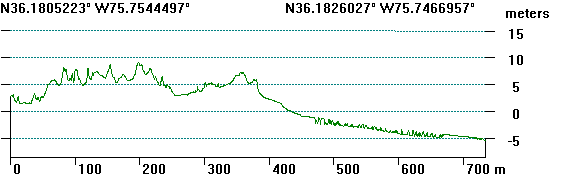
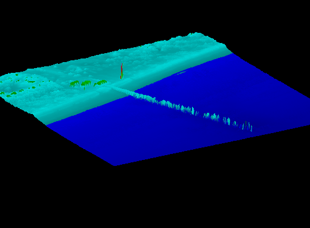

Of these, note that only one had water penetration and records the seafloof.

The data download for the North Carolina coast near Duck will be a 160 MB download.
There download includes multiple Lidar surveys covering the USACE FRF (US Army Corps of Engineers Field Research Facility) at Duck. They were downloaded from the NOAA LIDAR coastal data web site, where you could look for newer data, or coverage of other areas. The older surveys appear to be first return models, showing the ground, buildings, and vegetation--whatever the laser beam first encountered. Some also record the seafloor along the coast, which requires a different frequency (green) for the laser to enable it to penetrate water because the typical near infrared (NIR) laser will be completely absorbed by water. The surveys have different coverage, reflecting variable numbers of passes parallel to the coast, flying height, and instrument scan angle. You will also get the Lidar point cloud from the NOAA site for any new surveys. The LAS data, particularly for the older data, might not have all the fields filled in such as intensity or scan angle.
| Survey | Survey Dates | Notes |
| 1996_fall_east_coast.DEM | ||
| 1997_fall_east_coast.DEM | ||
| 1998_fall_east_coast.DEM | ||
| 1999_fall_east_coast.DEM | ||
| 1999_nc_post_dennis.DEM | hurricane landfall 1999/09/05 | |
| 1999_nc_post_floyd.DEM | hurricane landfall 1999/09/17 | |
| 2004_pre_ivan.DEM |
|
Seabed returns |
| 2005_topo_bathy.DEM | 20051001 to 20051126 | |
| 2008_NOAA_IOCM_NC.DEM |
|
Seabed returns |
| 2009_usace.DEM | 20090816 to 20090824 | |
| 2012 usgs post sandy | 20121105 to 20121129 | |
| 2013 usace nmcp nc | 20130926 | |
| 2014 nfcmp phase1 | 20140106 to 20141121 | |
| 2014 NGS post sandy bathytopo | ||
| 2014 usace ncmp duck | 20151031 to 20151031 | Seabed returns |
| 2015 usace ncmp duck | 20151031 | Seabed returns |
| 2016 post Matthew | 201610 to 201612 | Still most recent available, Aug 2019 |
| Other Display Options | |
|
 |
|
|
|
Of these, note that only one had water penetration and records the seafloof. |
|
 |
|
Last revision 9/6/2019